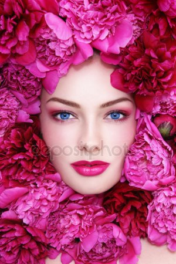

Ваше лицо это Ваша визитная карточка
Визитные карточки своим внешним видом обязательно отражают род деятельности ее владельца. Так и визитка косметолога должна соответствовать профессии специалиста в области косметологии. Косметолог занимается правильным уходом за лицом и телом, а также коррекцией недостатков кожи. Вот и визитка косметолога должна быть соблазнительной и вдохновляющей, чтобы привлекать клиентов. Спокойный и нежный цветовой спектр, элегантный дизайн и информация, вызывающая любопытство – вот основные черты оформления визитки косметолога. И неважно, одному специалисту принадлежит данная карточка или целому косметическому салону, главное, чтобы она была сделана качественно и долго служила своим целям.
Визитные карточки своим внешним видом обязательно отражают род деятельности ее владельца. Так и визитка косметолога должна соответствовать профессии специалиста в области косметологии. Косметолог занимается правильным уходом за лицом и телом, а также коррекцией недостатков кожи. Вот и визитка косметолога должна быть соблазнительной и вдохновляющей, чтобы привлекать клиентов. Спокойный и нежный цветовой спектр, элегантный дизайн и информация, вызывающая любопытство – вот основные черты оформления визитки косметолога. И неважно, одному специалисту принадлежит данная карточка или целому косметическому салону, главное, чтобы она была сделана качественно и долго служила своим целям.